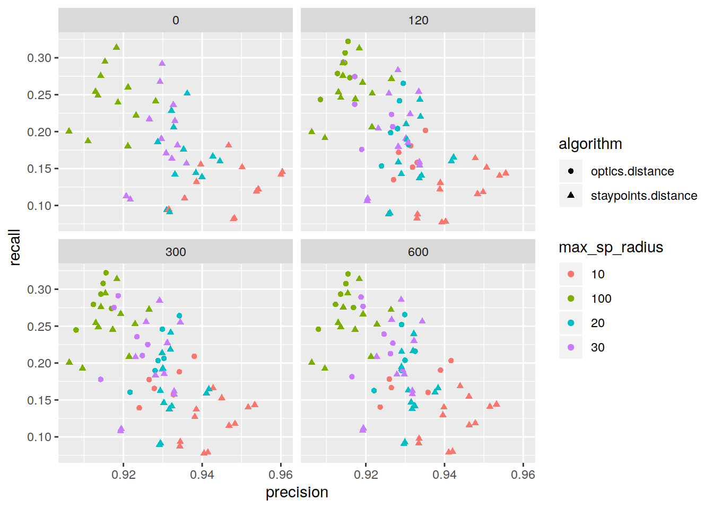

Exploration of algorithms and parameters
Dennis Wollersheim
2020-01-13
Last updated: 2020-01-27
Checks: 6 1
Knit directory: initialAnalysis/
This reproducible R Markdown analysis was created with workflowr (version 1.4.0.9001). The Checks tab describes the reproducibility checks that were applied when the results were created. The Past versions tab lists the development history.
The R Markdown is untracked by Git. To know which version of the R Markdown file created these results, you’ll want to first commit it to the Git repo. If you’re still working on the analysis, you can ignore this warning. When you’re finished, you can run wflow_publish to commit the R Markdown file and build the HTML.
Great job! The global environment was empty. Objects defined in the global environment can affect the analysis in your R Markdown file in unknown ways. For reproduciblity it’s best to always run the code in an empty environment.
The command set.seed(20180727) was run prior to running the code in the R Markdown file. Setting a seed ensures that any results that rely on randomness, e.g. subsampling or permutations, are reproducible.
Great job! Recording the operating system, R version, and package versions is critical for reproducibility.
Nice! There were no cached chunks for this analysis, so you can be confident that you successfully produced the results during this run.
Great job! Using relative paths to the files within your workflowr project makes it easier to run your code on other machines.
Great! You are using Git for version control. Tracking code development and connecting the code version to the results is critical for reproducibility. The version displayed above was the version of the Git repository at the time these results were generated.
Note that you need to be careful to ensure that all relevant files for the analysis have been committed to Git prior to generating the results (you can use wflow_publish or wflow_git_commit). workflowr only checks the R Markdown file, but you know if there are other scripts or data files that it depends on. Below is the status of the Git repository when the results were generated:
Ignored files:
Ignored: .Rhistory
Ignored: .drake/
Ignored: .slurm_batchtools.tmpl.swp
Ignored: analysis/analyse_staypoint_estimates_cache/
Ignored: analysis/evaluate_staypoint_estimates_cache/
Ignored: analysis/figure/
Ignored: analysis/mark_staypoint_cache/
Ignored: analysis/mark_staypoint_systematic_cache/
Ignored: cluster.json
Ignored: credentials.json
Ignored: data/
Ignored: data_fast
Ignored: explore/.make.R.swp
Ignored: lib/keys.R
Untracked files:
Untracked: .fdignore
Untracked: analysis/evaluate_staypoint_estimates_optics_vs_distance.Rmd
Untracked: analysis/evaluate_staypoint_estimates_single_best_algorithm.Rmd
Untracked: analysis/where_are_these_locations_florian.Rmd
Untracked: explore/failure_analysis_florian_surveys.R
Untracked: explore/florian_2020-01-23.R
Untracked: explore/optics_explore_temp.R
Untracked: explore/timezone_test.R
Unstaged changes:
Deleted: analysis/evaluate_staypoint_estimates_optics.Rmd
Modified: analysis/evaluate_staypoint_estimates_post_drake.Rmd
Modified: explore/explore_results_final.R
Deleted: explore/optics_explore.R
Modified: lib/kernel_density_functions.R
Modified: lib/load_results.R
Note that any generated files, e.g. HTML, png, CSS, etc., are not included in this status report because it is ok for generated content to have uncommitted changes.
There are no past versions. Publish this analysis with wflow_publish() to start tracking its development.
source('lib/base_initialise.R')Loading required package: spLoading required package: DBI── Attaching packages ─────────────────────────────────────── tidyverse 1.3.0 ──✔ ggplot2 3.2.1 ✔ purrr 0.3.3
✔ tibble 2.1.3 ✔ dplyr 0.8.3
✔ tidyr 1.0.0 ✔ stringr 1.4.0
✔ readr 1.3.1 ✔ forcats 0.4.0── Conflicts ────────────────────────────────────────── tidyverse_conflicts() ──
✖ tidyr::extract() masks raster::extract()
✖ dplyr::filter() masks stats::filter()
✖ dplyr::lag() masks stats::lag()
✖ dplyr::select() masks raster::select()
Attaching package: 'lubridate'The following object is masked from 'package:base':
date
Attaching package: 'drake'The following objects are masked from 'package:tidyr':
expand, gatherData (c) OpenStreetMap contributors, ODbL 1.0. http://www.openstreetmap.org/copyright
Attaching package: 'tsibble'The following objects are masked from 'package:lubridate':
interval, new_intervalThe following object is masked from 'package:dplyr':
idThe following object is masked from 'package:raster':
stretch
Attaching package: 'magrittr'The following object is masked from 'package:purrr':
set_namesThe following object is masked from 'package:tidyr':
extractThe following object is masked from 'package:raster':
extract
Attaching package: 'wrapr'The following object is masked from 'package:dplyr':
coalesceThe following object is masked from 'package:tibble':
viewLoading required package: BiocGenericsLoading required package: parallel
Attaching package: 'BiocGenerics'The following objects are masked from 'package:parallel':
clusterApply, clusterApplyLB, clusterCall, clusterEvalQ,
clusterExport, clusterMap, parApply, parCapply, parLapply,
parLapplyLB, parRapply, parSapply, parSapplyLBThe following objects are masked from 'package:lubridate':
intersect, setdiff, unionThe following objects are masked from 'package:dplyr':
combine, intersect, setdiff, unionThe following objects are masked from 'package:raster':
as.data.frame, intersect, match, union, unique, which.max,
which.minThe following objects are masked from 'package:stats':
IQR, mad, sd, var, xtabsThe following objects are masked from 'package:base':
anyDuplicated, append, as.data.frame, basename, cbind, colnames,
dirname, do.call, duplicated, eval, evalq, Filter, Find, get, grep,
grepl, intersect, is.unsorted, lapply, Map, mapply, match, mget,
order, paste, pmax, pmax.int, pmin, pmin.int, Position, rank,
rbind, Reduce, rownames, sapply, setdiff, sort, table, tapply,
union, unique, unsplit, which, which.max, which.minLoading required package: S4VectorsLoading required package: stats4
Attaching package: 'S4Vectors'The following object is masked from 'package:drake':
expandThe following objects are masked from 'package:lubridate':
second, second<-The following objects are masked from 'package:dplyr':
first, renameThe following object is masked from 'package:tidyr':
expandThe following objects are masked from 'package:raster':
metadata, metadata<-, values, values<-The following object is masked from 'package:base':
expand.grid
Attaching package: 'IRanges'The following object is masked from 'package:tsibble':
tileThe following object is masked from 'package:lubridate':
%within%The following objects are masked from 'package:dplyr':
collapse, desc, sliceThe following object is masked from 'package:purrr':
reduceThe following objects are masked from 'package:raster':
distance, shift, trimThe following object is masked from 'package:sp':
%over%Warning: package 'zoo' was built under R version 3.6.2
Attaching package: 'zoo'The following object is masked from 'package:tsibble':
indexThe following objects are masked from 'package:base':
as.Date, as.Date.numeric
Attaching package: 'glue'The following objects are masked from 'package:IRanges':
collapse, trimThe following object is masked from 'package:dplyr':
collapseThe following object is masked from 'package:raster':
trim
Attaching package: 'tibbletime'The following object is masked from 'package:stats':
filtersource('lib/functions.R')
Attaching package: 'janitor'The following object is masked from 'package:raster':
crosstabThe following objects are masked from 'package:stats':
chisq.test, fisher.testsource('lib/gps_functions.R')
source('lib/location_prep.R')
source('lib/load_results.R')Warning: Expected 8 pieces. Missing pieces filled with `NA` in 576 rows [1, 2,
3, 4, 5, 6, 7, 8, 9, 10, 11, 12, 13, 14, 15, 16, 17, 18, 19, 20, ...].source('lib/evaluate_staypoint_estimates_helper.R')
source('lib/survey_functions.R')
source("explore/failure_analysis_florian_surveys.R")
min_accuracy = 10
display_one_staypoint_set = function( df, .userid, .night ) {
readd(df, character_only=TRUE ) %>%
filter( userid==.userid & night==.night) %>%
mutate(
m_lat = ll2m( latitude, min(latitude), m_per_latitude),
m_lon = ll2m( longitude, min(longitude), m_per_longitude)) %>%
ggplot( aes( m_lat, m_lon, color=as.factor(n_staypoint))) +
ggtitle(paste(str_subset(.userid, '.*_'), .night, df)) +
geom_point()
}demonstrate the difference between the different accuracy levels (100/10), and the impact on the different algorithms
for a single user/night
display_one_staypoint_set (
'optics_distance_14400_300_100_interpolated_locations_120_filtered_accuracy_10',
'60df2368-deb6-4f46-aebc-4ad7dd80f434',
'2014-10-31')display_one_staypoint_set(
'staypoints_distance_14400_300_100_interpolated_locations_120_filtered_accuracy_10',
'60df2368-deb6-4f46-aebc-4ad7dd80f434',
'2014-10-31')
display_one_staypoint_set(
'optics_distance_14400_300_100_interpolated_locations_120_filtered_accuracy_100',
'60df2368-deb6-4f46-aebc-4ad7dd80f434',
'2014-10-31')
display_one_staypoint_set(
'staypoints_distance_14400_300_100_interpolated_locations_120_filtered_accuracy_100',
'60df2368-deb6-4f46-aebc-4ad7dd80f434', '2014-10-31')
match optics and staypoint, comparing found surveys behaviour
Note, when using a loose accuracy level, sp algorithm is slightly better at finding surveys
using dataset : optics_distance_14400_300_100_interpolated_locations_120_filtered_accuracy_100
readd( df_matching_survey_per_staypoint_df_matching_survey_optics_distance_14400_300_100_interpolated_locations_120_filtered_accuracy_100) %>%
mutate(algo='optics') %>%
bind_rows( readd(df_matching_survey_per_staypoint_df_matching_survey_staypoints_distance_14400_300_100_interpolated_locations_120_filtered_accuracy_100) %>%
mutate(algo='sp')) %>%
count( userid, night, algo) %>%
spread(algo, n, fill=0) %>%
arrange( optics - sp) %>%
head(5 )# A tibble: 5 x 4
userid night optics sp
<chr> <date> <dbl> <dbl>
1 7907f345-ef4b-412a-9340-b56ebb589cca 2014-09-19 3 8
2 fd569485-c0ab-4f02-be9a-6601463def18 2014-10-03 2 6
3 24c0f1c5-a8f0-4f7e-a8c9-3bb9b545ddae 2014-09-27 4 7
4 3e374874-e787-4bcb-bfbf-bbb58b4c1c03 2014-10-25 1 4
5 3eacbf9f-0187-46ae-8e3d-feb350fe8803 2014-09-27 4 7display_one_staypoint_set(
'optics_distance_14400_300_100_interpolated_locations_120_filtered_accuracy_100',
'7907f345-ef4b-412a-9340-b56ebb589cca','2014-09-19')
display_one_staypoint_set(
'staypoints_distance_14400_300_100_interpolated_locations_120_filtered_accuracy_100',
'7907f345-ef4b-412a-9340-b56ebb589cca','2014-09-19')display_one_staypoint_set(
'optics_distance_14400_300_100_interpolated_locations_120_filtered_accuracy_10',
'7907f345-ef4b-412a-9340-b56ebb589cca','2014-09-19')
display_one_staypoint_set(
'staypoints_distance_14400_300_100_interpolated_locations_120_filtered_accuracy_10',
'7907f345-ef4b-412a-9340-b56ebb589cca','2014-09-19') # background
# background
what do the surveys look like
Florian was able to identify survey points at the following frequencies. sp stands for if this survey was likely to be a staypoint (the ‘gold’ standard to match) The best staypoint discovery algorithm will maximise precision and recall of sp type locations
n_ptype_short_total() %>%
inner_join( ptype_short()) %>%
group_by( ptype_short, category ) %>%
summarise( total_for_category=sum(n_ptype_loc)) %>%
kableExtra::kable()Joining, by = "ptype_id_short"| ptype_short | category | total_for_category |
|---|---|---|
| Bar | sp | 345 |
| Club | sp | 86 |
| Other commercial venue | sp | 74 |
| Private | sp | 1304 |
| Restaurant | sp | 130 |
| Streets / Outdoor / Park | sp | 331 |
| Travelling | non-sp | 116 |
| UNKNOWN | non-sp | 2287 |
In summary, there are this breakdown of target staypoints
n_ptype_short_total() %>%
inner_join( ptype_short()) %>%
group_by( category ) %>%
summarise( total_for_category=sum(n_ptype_loc)) %>%
kableExtra::kable()Joining, by = "ptype_id_short"| category | total_for_category |
|---|---|
| non-sp | 2403 |
| sp | 2270 |
which algorithim and parameters maximise discovery of appropriate surveys
Here are the top 20 algorithms, for raw survey discovery. Optics is comparable, but both have very loose parameters
df_results %>%
arrange( desc( sp )) %>%
mutate( pct_coverage = mkpct( sp / 1939 )) %>%
dplyr::select( base_file, sp,pct_coverage ) %>%
head(20) %>%
kableExtra::kable()| base_file | sp | pct_coverage |
|---|---|---|
| staypoints_distance_14400_300_100_interpolated_locations_120_filtered_accuracy_100 | 1334 | 68.80 |
| staypoints_distance_14400_300_100_interpolated_locations_300_filtered_accuracy_100 | 1334 | 68.80 |
| staypoints_distance_14400_300_100_interpolated_locations_600_filtered_accuracy_100 | 1334 | 68.80 |
| staypoints_distance_14400_300_100_filtered_accuracy_100 | 1333 | 68.75 |
| staypoints_distance_14400_300_100_filtered_sigma.v2_0.5 | 1331 | 68.64 |
| optics_distance_14400_300_100_interpolated_locations_120_filtered_accuracy_100 | 1330 | 68.59 |
| optics_distance_1800_300_100_interpolated_locations_120_filtered_accuracy_100 | 1330 | 68.59 |
| optics_distance_14400_300_100_interpolated_locations_300_filtered_accuracy_100 | 1322 | 68.18 |
| optics_distance_14400_300_100_interpolated_locations_600_filtered_accuracy_100 | 1322 | 68.18 |
| optics_distance_1800_300_100_interpolated_locations_300_filtered_accuracy_100 | 1322 | 68.18 |
| optics_distance_1800_300_100_interpolated_locations_600_filtered_accuracy_100 | 1322 | 68.18 |
| staypoints_distance_14400_300_100_filtered_sigma.v2_1 | 1318 | 67.97 |
| staypoints_distance_14400_300_100_filtered_sigma.v2_3 | 1317 | 67.92 |
| staypoints_distance_14400_300_100_filtered_sigma.v2_2 | 1316 | 67.87 |
| staypoints_distance_14400_300_100_filtered_sigma.v2_100 | 1311 | 67.61 |
| staypoints_distance_14400_300_100_filtered_sigma_0.5 | 1307 | 67.41 |
| staypoints_distance_14400_300_100_filtered_sigma_1 | 1307 | 67.41 |
| staypoints_distance_14400_300_100_filtered_sigma_100 | 1307 | 67.41 |
| staypoints_distance_14400_300_100_filtered_sigma_2 | 1307 | 67.41 |
| staypoints_distance_14400_300_100_filtered_sigma_3 | 1307 | 67.41 |
df_results %>%
arrange( desc( sp )) %>%
mutate( pct_coverage = mkpct( sp / 1939 )) %>%
dplyr::select( base_file, sp,pct_coverage, algorithm ) %>%
head(20) %>%
ggplot( aes( base_file, sp, fill=algorithm ) ) +
geom_col() +
coord_flip()# Is there a difference between optics and distance staypoint discovery sets? look at the characteristics of the best of each; not much difference, at the wide parameter level
df_results %>%
arrange( desc( sp )) %>%
filter( str_detect( base_file, '^stay')) %>%
head(1) %>%
pluck('base_file') %>%
paste0('df_matching_survey_', .) %>%
readd( character_only=TRUE ) %>%
{ . } -> df_sp
df_results %>%
arrange( desc( sp )) %>%
filter( str_detect( base_file, '^optics')) %>%
head(1) %>%
pluck('base_file') %>%
paste0('df_matching_survey_', .) %>%
readd( character_only=TRUE ) %>%
{ . } -> df_op
#df_sp %>% count( userid, night )
#df_op %>% count( userid, night )Maybe 1% difference in night overlap
df_op %>%
anti_join( df_sp, by=c('userid','night'))# A tibble: 10 x 11
userid night timestamp_survey timestamp_end.x which id n_staypoint
<chr> <date> <dbl> <dbl> <chr> <dbl> <int>
1 184a1… 2014-10-10 1412965301 1412965301 dq 273 1
2 184a1… 2014-10-10 1412966165 1412966165 dq 274 1
3 60df2… 2014-10-11 1413063025 1413063025 dq 1525 1
4 64105… 2014-10-03 1412366308 1412366308 dq 1599 1
5 64105… 2014-10-03 1412366308 1412366308 dq 1599 2
6 9afc6… 2014-10-31 1414791859 1414791859 dq 2669 2
7 ad36d… 2014-10-04 1412449334 1412449334 dq 2933 1
8 b7858… 2014-10-25 1414268128 1414268128 dq 3164 3
9 bb628… 2014-09-26 1411754650 1411754650 dq 3239 2
10 c53a9… 2014-10-18 1413662840 1413662840 dq 3418 1
# … with 4 more variables: timestamp_start_location <dbl>,
# timestamp_end_location <dbl>, longitude <dbl>, latitude <dbl>df_sp %>%
anti_join( df_op, by=c('userid','night'))# A tibble: 11 x 11
userid night timestamp_survey timestamp_end.x which id n_staypoint
<chr> <date> <dbl> <dbl> <chr> <dbl> <dbl>
1 184a1… 2014-10-04 1412449642 1412449642 dq 270 1
2 184a1… 2014-10-04 1412453927 1412453927 dq 271 1
3 26d4c… 2014-09-27 1411853954 1411853954 dq 495 3
4 26d4c… 2014-09-27 1411856095 1411856095 dq 496 3
5 5feda… 2014-11-08 1415477550 1415477550 dq 1503 2
6 7907f… 2014-10-24 1414192420 1414192420 dq 1986 8
7 7907f… 2014-10-24 1414192684 1414192684 dq 1987 8
8 98c7d… 2014-09-27 1411845243 1411845243 dq 2601 2
9 98c7d… 2014-09-27 1411845421 1411845421 dq 2602 2
10 e3aec… 2014-10-04 1412453337 1412453337 dq 3958 3
11 feb82… 2014-10-10 1412968681 1412968681 dq 4668 1
# … with 4 more variables: timestamp_start_location <dbl>,
# timestamp_end_location <dbl>, longitude <dbl>, latitude <dbl>difference between optics and distance staypoint discovery sets at finer parameter levels (staypoint radius=20m)
At this level, optics gets 13% fewer sp, same staypoint duration, many fewer staypoints
df_results %>%
arrange( desc( sp )) %>%
filter( max_sp_radius==20) %>%
filter( str_detect( base_file, '^stay')) %>%
head(1)# A tibble: 1 x 18
source algorithm max_jump_time min_sp_duration max_sp_radius filter_type
<chr> <chr> <chr> <chr> <chr> <chr>
1 stayp… staypoin… 14400 300 20 filtered.a…
# … with 12 more variables: filter_parm1 <chr>, filter_parm2 <chr>,
# non_sp <int>, sp <int>, surveys_total <int>, sp_total <dbl>,
# total_sp_duration <dbl>, base_file <chr>, interpol_parm <chr>,
# accuracy_filter <chr>, precision <dbl>, recall <dbl>df_results %>%
arrange( desc( sp )) %>%
filter( max_sp_radius==20) %>%
filter( str_detect( base_file, '^optics')) %>%
head(1)# A tibble: 1 x 18
source algorithm max_jump_time min_sp_duration max_sp_radius filter_type
<chr> <chr> <chr> <chr> <chr> <chr>
1 optic… optics.d… 14400 300 20 filtered.a…
# … with 12 more variables: filter_parm1 <chr>, filter_parm2 <chr>,
# non_sp <int>, sp <int>, surveys_total <int>, sp_total <dbl>,
# total_sp_duration <dbl>, base_file <chr>, interpol_parm <chr>,
# accuracy_filter <chr>, precision <dbl>, recall <dbl>20M radius staypoint results
which what do results look like when looking at algorithim and parameters maximise discovery of appropriate surveys
Here are the top 20 algorithms, for raw survey discovery. Optics is comparable, but both have very loose parameters
df_results %>%
filter( max_sp_radius==20) %>%
arrange( desc( sp )) %>%
mutate( pct_coverage = mkpct( sp / 1939 )) %>%
dplyr::select( base_file, sp,pct_coverage ) %>%
head(20) %>%
kableExtra::kable()| base_file | sp | pct_coverage |
|---|---|---|
| staypoints_distance_14400_300_20_interpolated_locations_120_filtered_accuracy_100 | 1178 | 60.75 |
| staypoints_distance_14400_300_20_interpolated_locations_300_filtered_accuracy_100 | 1172 | 60.44 |
| staypoints_distance_14400_300_20_filtered_sigma.v2_0.5 | 1169 | 60.29 |
| staypoints_distance_14400_300_20_interpolated_locations_600_filtered_accuracy_100 | 1168 | 60.24 |
| staypoints_distance_1800_300_20_interpolated_locations_120_filtered_accuracy_100 | 1147 | 59.15 |
| staypoints_distance_1800_300_20_interpolated_locations_300_filtered_accuracy_100 | 1141 | 58.84 |
| staypoints_distance_1800_300_20_interpolated_locations_600_filtered_accuracy_100 | 1137 | 58.64 |
| staypoints_distance_14400_300_20_filtered_accuracy_100 | 1133 | 58.43 |
| staypoints_distance_1800_300_20_filtered_sigma.v2_0.5 | 1120 | 57.76 |
| staypoints_distance_14400_300_20_filtered_sigma.v2_1 | 1118 | 57.66 |
| staypoints_distance_14400_300_20_filtered_sigma.v2_2 | 1113 | 57.40 |
| staypoints_distance_14400_300_20_filtered_sigma.v2_3 | 1108 | 57.14 |
| staypoints_distance_14400_300_20_filtered_sigma.v2_100 | 1094 | 56.42 |
| staypoints_distance_1800_300_20_filtered_accuracy_100 | 1092 | 56.32 |
| optics_distance_14400_300_20_interpolated_locations_600_filtered_accuracy_100 | 1089 | 56.16 |
| optics_distance_1800_300_20_interpolated_locations_600_filtered_accuracy_100 | 1089 | 56.16 |
| staypoints_distance_14400_300_20_filtered_sigma_0.5 | 1087 | 56.06 |
| staypoints_distance_14400_300_20_filtered_sigma_1 | 1087 | 56.06 |
| staypoints_distance_14400_300_20_filtered_sigma_100 | 1087 | 56.06 |
| staypoints_distance_14400_300_20_filtered_sigma_2 | 1087 | 56.06 |
df_results %>%
filter( max_sp_radius==20) %>%
arrange( desc( sp )) %>%
mutate( pct_coverage = mkpct( sp / 1939 )) %>%
dplyr::select( base_file, sp,pct_coverage, algorithm ) %>%
head(20) %>%
ggplot( aes( base_file, sp, fill=algorithm ) ) +
geom_col() +
coord_flip()# model precision / recall we are trying to identify correct survey marked staypoints
- True positive - surveys identified as staypoints
- false positive - surveys missed by staypoint discovery
- true negative - points neither marked by surveys nor identified as staypoints
- false negative points identified as staypoints, but not marked by surveys (sp)
our gold standard is actuallly bronze
False negative criticism: an algorithmm identified staypoint could still be a valid staypoint
it might be an unsurveyed staypoint, maybe they didn’t have a drink, or record it (e.g. visiting on the streetcorner)
we will get relativly good (but low) values for precision and recall if we assume that the surveypoints do identify staypoints
recall is the number of true positives divided by the number of true positives plus the number of false negatives.
Precision is defined as the number of true positives divided by the number of true positives plus the number of false positives.
what does precision and recall look like
duration in seconds, distance from centriod in meters
Optics is better. larger radius is better
df_results %>%
ggplot( aes( precision, recall, shape=algorithm, color= max_sp_radius ) ) +
geom_point()df_results %>%
ggplot( aes( precision, recall, shape=algorithm, color= min_sp_duration ) ) +
geom_point()effect of different filtering algorithms
Excluding optics algorithm, because it only uses accuracy filter
Accuracy is the best, throw away the others
df_results %>%
filter( algorithm != 'optics.distance') %>%
ggplot( aes( precision, recall, shape=min_sp_duration, color= max_sp_radius ) ) +
geom_point() + facet_wrap( ~filter_type )effect of interpolation
Interpolation appears to have little effect
df_results %>%
filter( filter_type == 'filtered.accuracy') %>%
ggplot( aes( precision, recall, shape=algorithm, color= max_sp_radius ) ) +
geom_point() + facet_wrap( ~interpol_parm )
sessionInfo()R version 3.6.1 (2019-07-05)
Platform: x86_64-pc-linux-gnu (64-bit)
Running under: Ubuntu 18.04.3 LTS
Matrix products: default
BLAS: /usr/lib/x86_64-linux-gnu/openblas/libblas.so.3
LAPACK: /usr/lib/x86_64-linux-gnu/libopenblasp-r0.2.20.so
locale:
[1] LC_CTYPE=en_US.UTF-8 LC_NUMERIC=C
[3] LC_TIME=en_US.UTF-8 LC_COLLATE=en_US.UTF-8
[5] LC_MONETARY=en_US.UTF-8 LC_MESSAGES=en_US.UTF-8
[7] LC_PAPER=en_US.UTF-8 LC_NAME=C
[9] LC_ADDRESS=C LC_TELEPHONE=C
[11] LC_MEASUREMENT=en_US.UTF-8 LC_IDENTIFICATION=C
attached base packages:
[1] stats4 parallel stats graphics grDevices utils datasets
[8] methods base
other attached packages:
[1] janitor_1.2.0 dbscan_1.1-5 futile.logger_1.4.3
[4] tibbletime_0.1.3 glue_1.3.1 zoo_1.8-7
[7] geosphere_1.5-7 geohash_0.4.0 multidplyr_0.0.0.9000
[10] IRanges_2.19.10 S4Vectors_0.23.18 BiocGenerics_0.31.5
[13] fuzzyjoin_0.1.5 wrapr_1.8.9 knitr_1.27
[16] magrittr_1.5 tsibble_0.8.5 revgeo_0.15
[19] osmdata_0.1.1 drake_7.9.0.9000 lubridate_1.7.4
[22] forcats_0.4.0 stringr_1.4.0 dplyr_0.8.3
[25] purrr_0.3.3 readr_1.3.1 tidyr_1.0.0
[28] tibble_2.1.3 ggplot2_3.2.1 tidyverse_1.3.0
[31] RPostgreSQL_0.6-2 DBI_1.1.0 raster_3.0-1
[34] sp_1.3-2 nvimcom_0.9-82
loaded via a namespace (and not attached):
[1] nlme_3.1-142 bitops_1.0-6 fs_1.3.1
[4] webshot_0.5.2 filelock_1.0.2 httr_1.4.1
[7] rprojroot_1.3-2 tools_3.6.1 backports_1.1.5
[10] utf8_1.1.4 R6_2.4.1 lazyeval_0.2.2
[13] colorspace_1.4-1 withr_2.1.2 tidyselect_0.2.5
[16] curl_4.3 compiler_3.6.1 git2r_0.26.1
[19] cli_2.0.1 rvest_0.3.5 formatR_1.7
[22] xml2_1.2.2 labeling_0.3 scales_1.1.0
[25] digest_0.6.23 txtq_0.2.0 rmarkdown_2.0
[28] pkgconfig_2.0.3 htmltools_0.4.0 highr_0.8
[31] dbplyr_1.4.2 rlang_0.4.2 readxl_1.3.1
[34] rstudioapi_0.10 farver_2.0.1 generics_0.0.2
[37] jsonlite_1.6 RCurl_1.95-4.13 kableExtra_1.1.0
[40] Rcpp_1.0.3 munsell_0.5.0 fansi_0.4.1
[43] lifecycle_0.1.0 stringi_1.4.5 yaml_2.2.0
[46] snakecase_0.11.0 storr_1.2.1 RJSONIO_1.3-1.4
[49] grid_3.6.1 crayon_1.3.4 lattice_0.20-38
[52] haven_2.2.0 hms_0.5.3 zeallot_0.1.0
[55] anytime_0.3.6 pillar_1.4.3 igraph_1.2.4.2
[58] base64url_1.4 codetools_0.2-16 futile.options_1.0.1
[61] reprex_0.3.0 evaluate_0.14 lambda.r_1.2.4
[64] modelr_0.1.5 vctrs_0.2.1 cellranger_1.1.0
[67] gtable_0.3.0 assertthat_0.2.1 xfun_0.11
[70] broom_0.5.3 viridisLite_0.3.0 workflowr_1.4.0.9001
[73] ellipsis_0.3.0